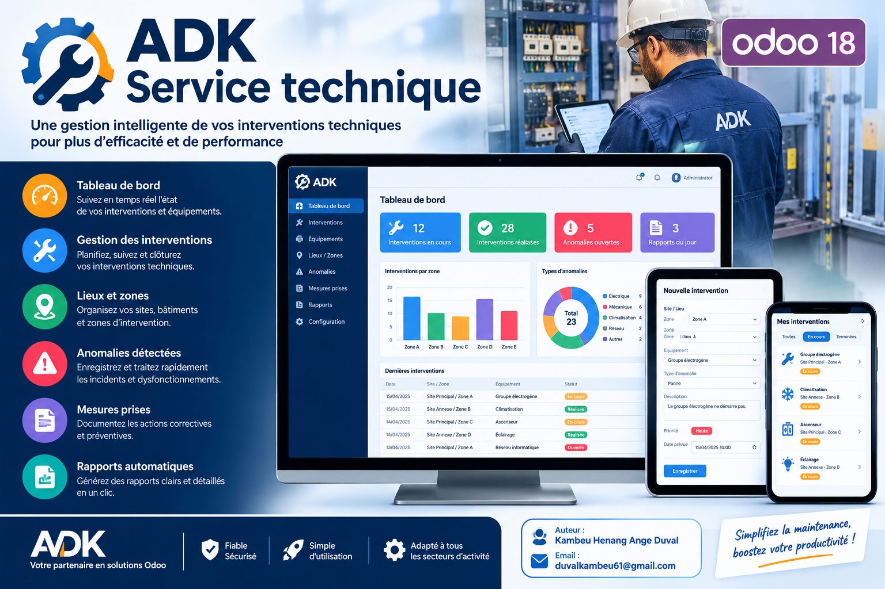
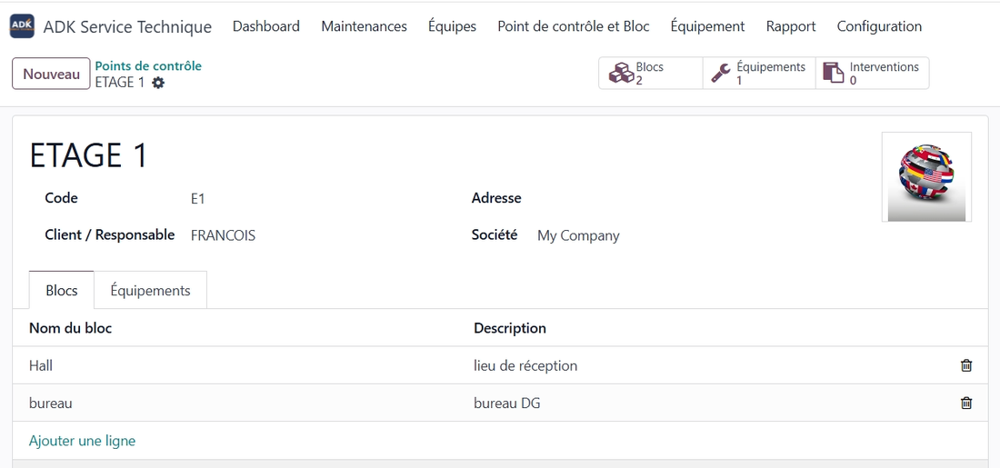
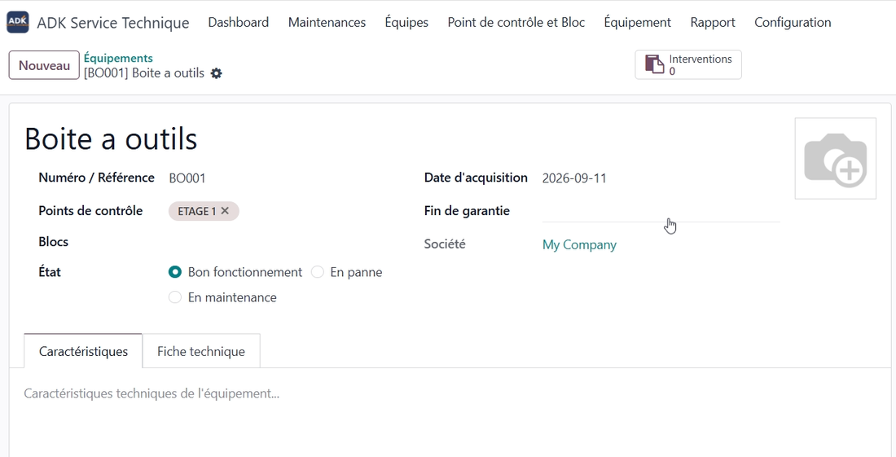
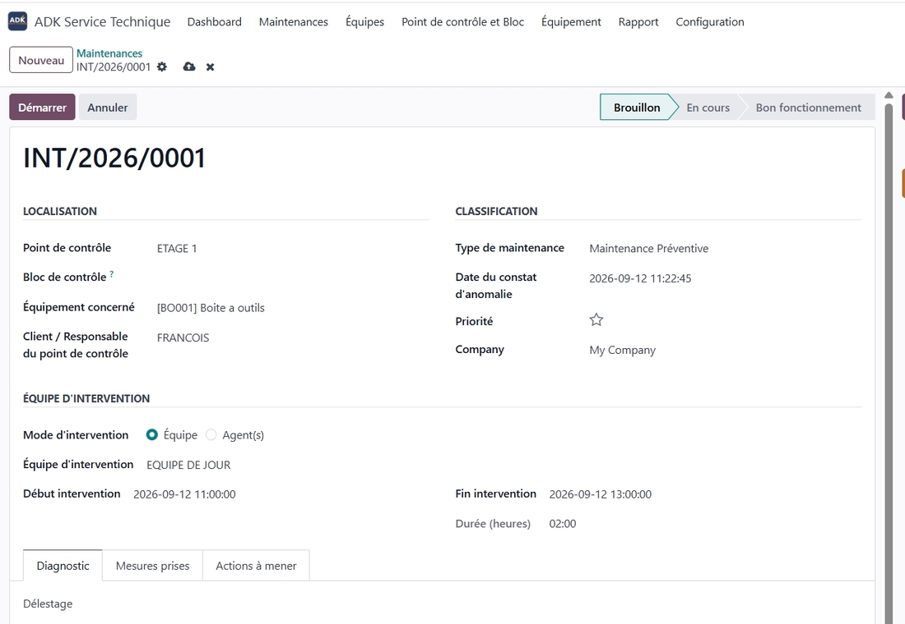
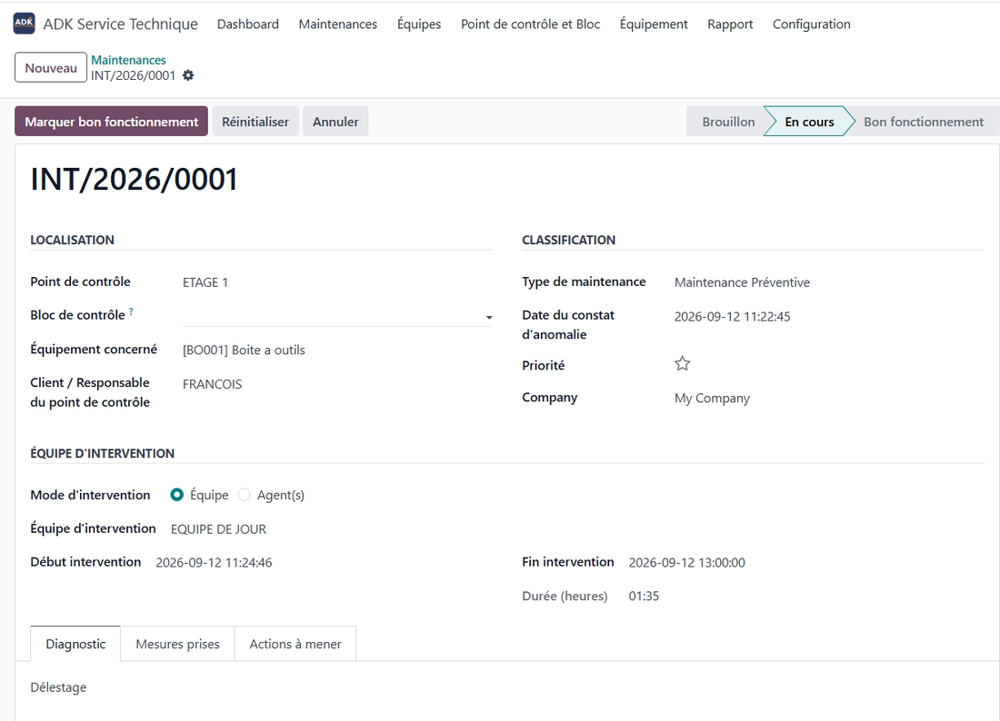
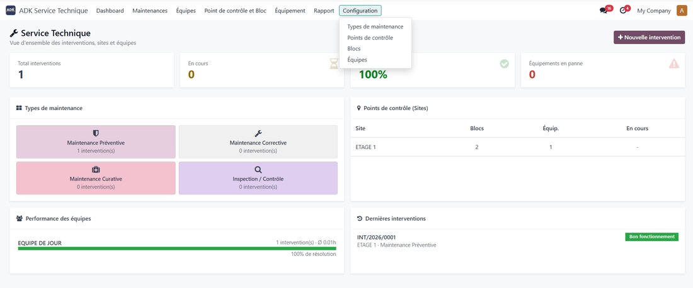
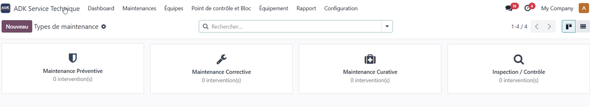
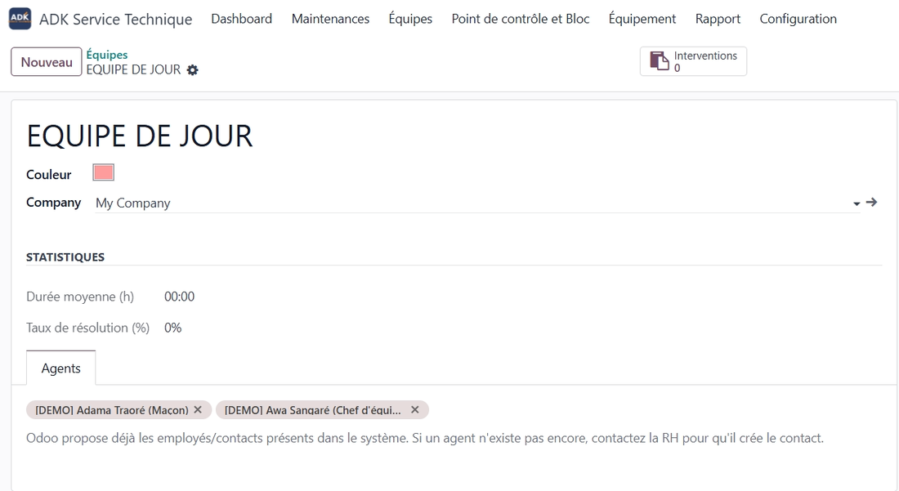

ADK Service Technique centralizes the management of sites, blocks, equipment and maintenance interventions. Technical teams can report anomalies, document diagnostics and corrective actions, while managers monitor operations through a clear and practical dashboard.
Monitor interventions, resolution rates, equipment issues, sites and team activity from one dashboard.
Track anomalies, diagnosis, measures taken, corrective actions and intervention status from start to finish.
Structure technical locations into sites and blocks and associate equipment with the correct location.
Build maintenance teams from employees already registered in Odoo and monitor their activity.
Generate clear intervention, equipment and global service reports with practical filters.
Separate field operations from management with dedicated Agent and Manager access levels.
A simple five-step workflow from configuration to reporting
Create technical sites and blocks, then organize maintenance teams using employees already available in Odoo.


Maintain technical information, location, acquisition date, warranty information and equipment status.
Record the control point, equipment, maintenance type and assigned team when an anomaly is detected.


Record the diagnosis, measures taken and corrective actions, then follow the intervention until completion.
Use the dashboard to analyze interventions by maintenance type, site and team, including open issues and resolution rates.


Configurable maintenance types

Maintenance team and agent information
Odoo 18.0 · Community and Enterprise environments · Required modules: Base, Discuss and Employees.